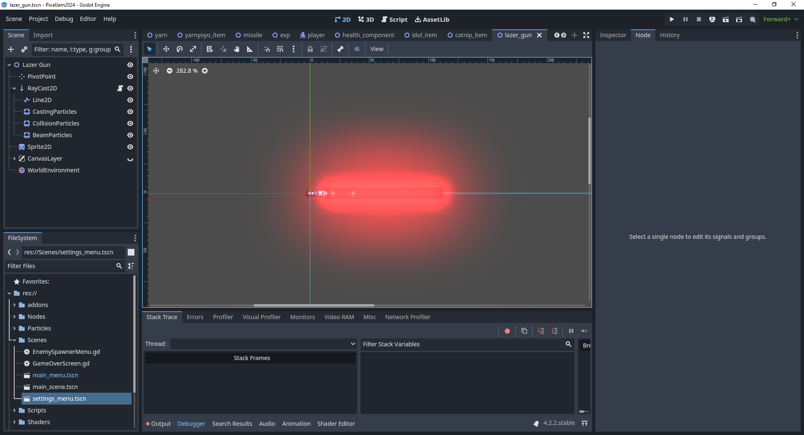
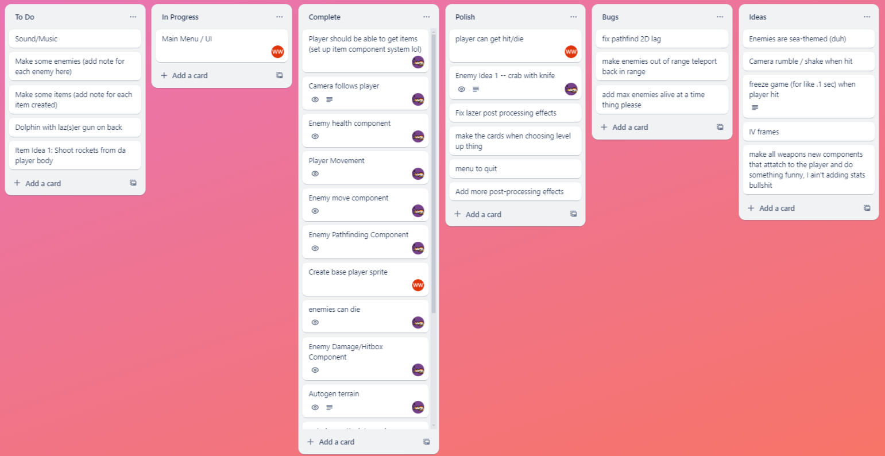

Crustacean Cat-sader
2D Roguelike Cat-astropheMade for the 2024 Pixel Game Jam - Aqua Theme
Made using Godot and GDscript
In the game, there are 5 items which I added to help you survive as more and more enemies spawn. As the game plays, the enemies get faster and more health, so eventually it becomes extremely hard to dodge. This was a fun experience for me, and I was able to learn a lot about good game dev design patterns. I also did all of the art for the game!
Gameplay

Slaying Crabs!!

Game Over!
Code

Main Gameplay Scene

Lazer Scene
Game Trello Process
